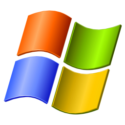

Windows XP
Microsoft · 2001
Windows XP (2001) finally merged Microsoft's two worlds: the consumer 9x line and the stable NT line became a single system for everyone. It wore the bright Luna theme — a blue title bar, a green Start button, rounded silver chrome — over the rolling green hills of the Bliss wallpaper.
It proved so solid and familiar that people (and businesses) refused to let go, keeping it running for well over a decade.
What made it special
- Luna: the blue-and-green candy interface with the green Start button.
- Unified the consumer and business Windows lines on the NT core.
- The Bliss wallpaper — those green hills.
- Fast user switching, a friendlier Start menu and Remote Desktop.
ⓘ Did you know…
Bliss is a real place. The default wallpaper is an unretouched 1996 photograph of green hills in Sonoma County, California, taken by Charles O'Rear — one of the most-viewed photos in history.
Two Windows become one. XP was the first time home users and businesses ran the same NT-based Windows, ending the old 9x/NT split.
It just wouldn't retire. Support officially ended in 2014, yet XP kept running on ATMs, tills and machinery for years afterward.